本篇分析zookeeper客户端常用指令
启动客户端
1 | sh zkCli.sh [-server ip:port] #启动客户端 |
默认连接本机的zookeeper，如果指定server，尝试连接指定server的zookeeper
connect
1 | connect host:port #连接zk服务端，与close命令配合使用可以连接或者断开zk服务端 |
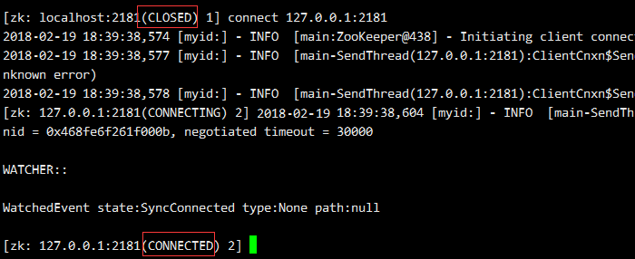
help
1 | help #查看有哪些命令 |
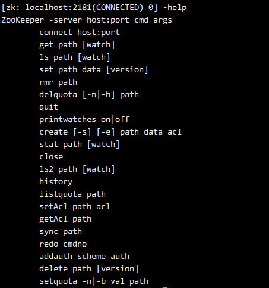
以上是client支持的命令，注意每个命令符之间一定要有空格，两个常见的命令符做个统一说明：
path 表示节点的绝对路径（因为zookeeper不支持相对路径）
watch 表示是否对节点进行监听（节点的变更将发送客户端通知）
ls
1 | ls path [watch] ##查看path节点下的一级子节点 |
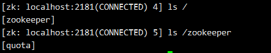
ls2
1 | ls2 path [watch] ##查看path节点下的一级子节点，并返回当前节点的stat信息 |
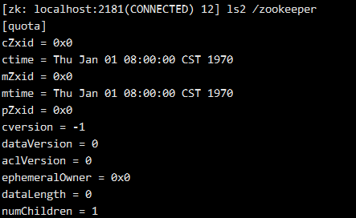
create
1 | create [-s] [-e] path data acl ##创建子节点 |
-s 表示是否为有序节点
-e 表示是否为临时节点
path 节点的绝对路径
data 节点的数据
acl 访问权限
如果父节点不存在，无法创建，因此节点必须逐级创建。
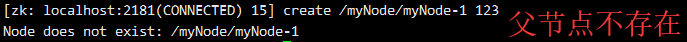
默认情况下（不带-s 和-e参数）创建的是持久节点
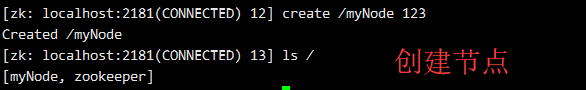
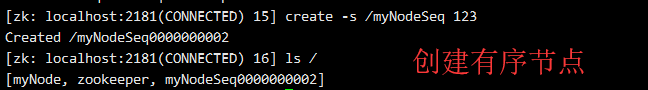
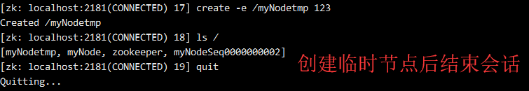
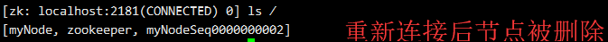
get
1 | get path [watch] ##获取对应节点的数据和stat信息 |
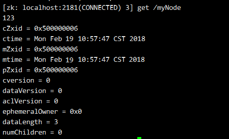
set
1 | set path data [version] ##设置存储的数据 |
[version] 为节点数据的版本，每次数据变更，dataVersion都会递增，version参数类似于乐观锁，指定修改对应version的节点数据，如果version不匹配，不做任何操作，不带version表示忽略版本号。
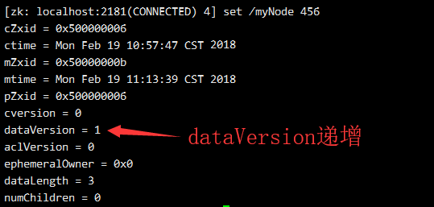
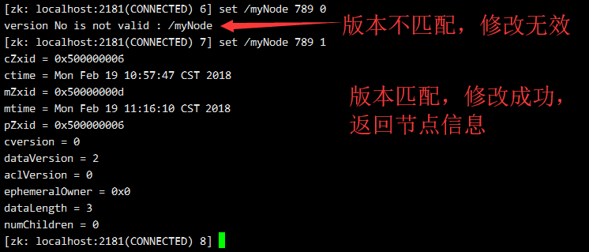
delete
1 | delete path [version] #删除节点 |
和set命令一样，delete也可以删除指定version的节点，不带version则表示忽略版本号直接删除
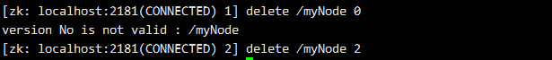
rmr
1 | rmr path #递归删除 |
如果当前节点下存在子节点，直接删除当前节点会提示节点非空（存在子节点）
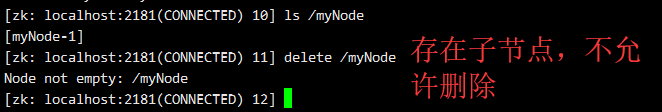
此时就要先删除子节点，才能删除当前节点，rmr命令允许递归删除当前节点。
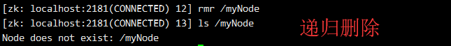
stat
1 | stat path [watch] #获取节点stat信息 |
跟get的差异在于只获取stat的信息
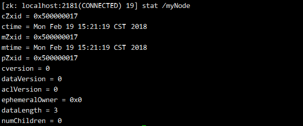
setquota
1 | setquota -n|-b val path ##设置配额属性 |
-n 表示该节点下子节点的个数count限制（包括当前节点自己）；
-b 表示该节点存储的数据字节大小bytes限制；
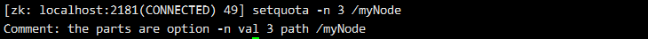
listquota
1 | listquota path #查看配额属性 |
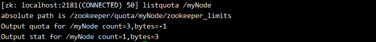
之前用setquota命令设置了最大节点count=3，bytes=-1表示不限制大小（count=-1也表示不限制），stat行count=1表示当前节点数为1，bytes=3表示当前字节大小为3
delquota
1 | delquota [-n|-b] path #删除配合属性 |
-n 只删除count配额
-b 只删除bytes配额
不带-n | -b表示删除该节点的所有配额属性
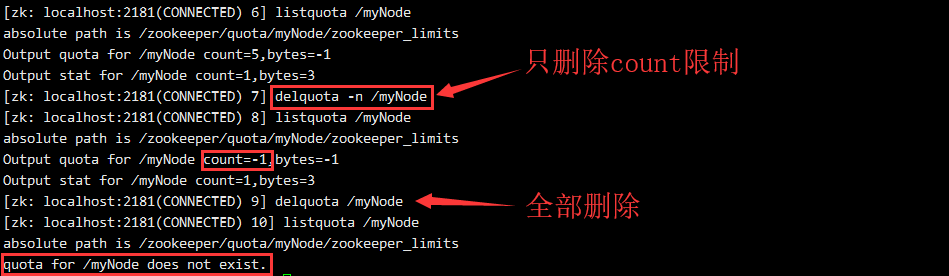
printwatches on|off
1 | printwatches on|off #开启/关闭 监听信息打印 |
查看是否开启打印监听
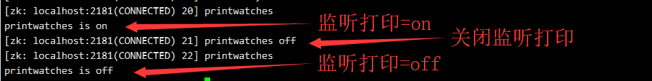
对一个节点设置监听，然后修改节点数据
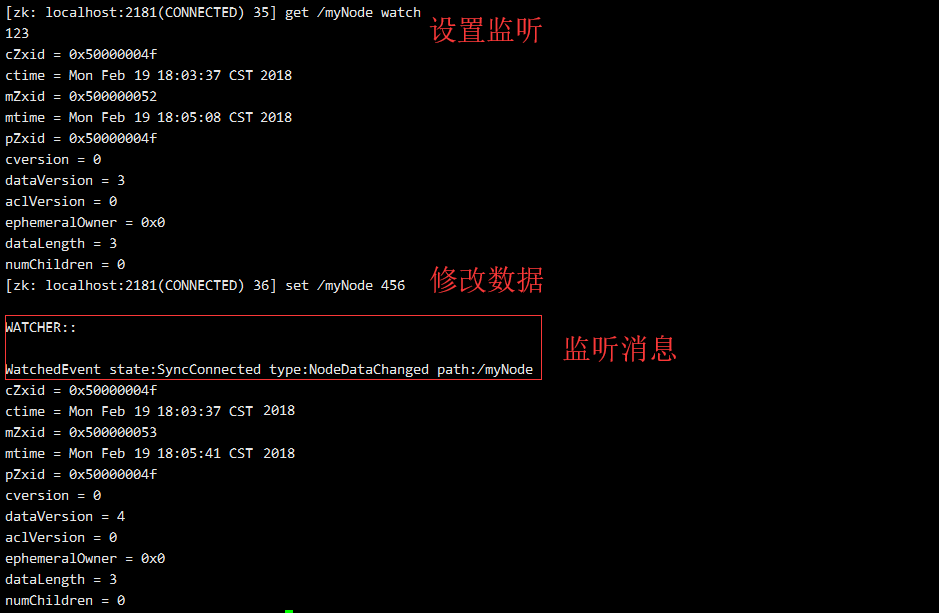
setAcl
1 | setAcl path acl #设置节点的访问权限 |
节点的访问权限必须单独设置，子节点无法继承父节点的访问权限。上一篇有提到zookeeper的ACL权限，授权命令为scheme : id : permission，permission对应Create（c）、Read（r）、Write（w）、Delete（d）、Admin（a）
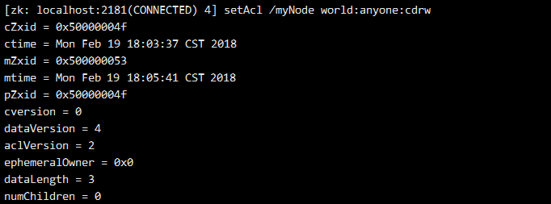
getAcl
1 | getAcl path #获取节点的访问权限 |
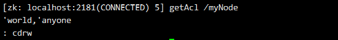
sync
1 | sync path #在集群中强制同步节点信息 |
history
1 | history #列出执行的命令历史 |
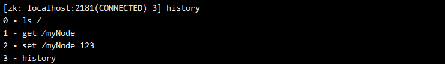
redo
1 | redo cmdno #再次执行 id = cmdno的命令，需配合 history命令查出历史命令的id |
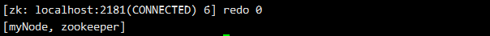
addauth
1 | addauth scheme auth #节点认证 |
close
1 | close #断开与zk服务端的连接 |
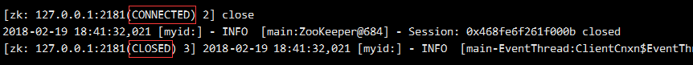
断开后，Client状态由CONNECTED变更为CLOSED
quit
1 | quit #退出客户端 |
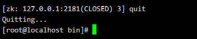